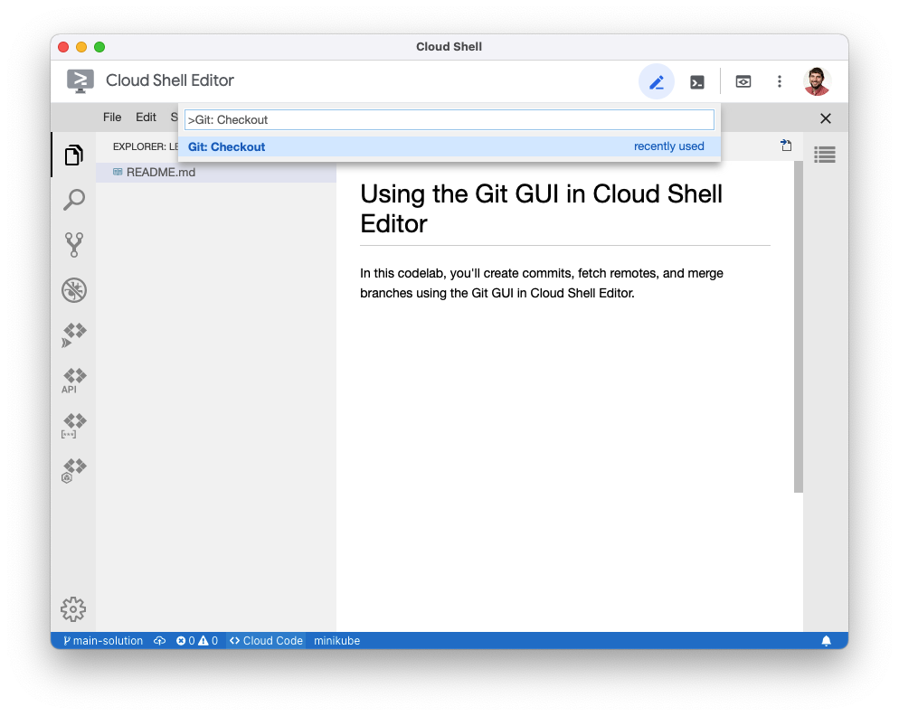
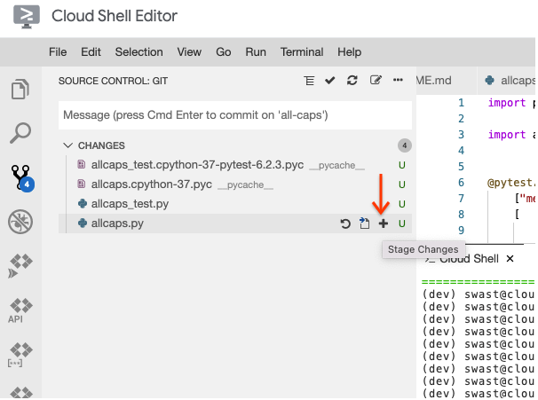

Now that you have some practice using the Git command-line tool, you can use the same commands via the Git plugin for Cloud Shell Editor. In this codelab, you'll create commits, fetch remotes, and merge branches using the Git GUI in Cloud Shell Editor.
Cloud Shell Editor works best once a Git repository is already cloned. Clone the repository with the Git command-line tool from Cloud Shell.
s-USER/lesson01-git-gui repository and copy the "Clone with SSH" path.s-USER/lesson01-git-gu repository with the git clone command.Replace the text after git clone with the path you copied from GitLab.
git clone git@techx-gitlab.640k.net:s-USER/lesson01-git-gui
It's a good practice to create a new branch when working on a feature. When collaborating, this ensures you don't affect the main branch that your teammates are relying on until your code is tested and ready to be merged.
The Cloud Shell Editor provides keyboard-based shortcuts for creating new branches and checking out existing ones. Since Cloud Shell Editor is a deployment of Eclipse Theia, which is a fork of Visual Studio Code, these shortcuts are based on the Visual Studio Code "Command Palette" ( https://code.visualstudio.com/docs/getstarted/userinterface#_command-palette)
Git: Checkout in the palette, keeping the leading > character. Chat users have been asking for a way to make it easier to SHOUT when their keyboards are missing the CAPS LOCK key. Create a Python script that converts command line input into ALL CAPS and prints it to the terminal.
allcaps.py.import sys
def print_allcaps(text: str):
print(text.upper())
if __name__ == "__main__":
print_allcaps(" ".join(sys.argv[1:]))
allcaps_test.py.import pytest
import allcaps
@pytest.mark.parametrize(
["message", "expected"],
[
("Hello, World!", "HELLO, WORLD!\n"),
("I'M ALREADY LOUD", "I'M ALREADY LOUD\n"),
("", "\n")
]
)
def test_print_allcaps(
# capsys is a built-in test fixture
# that allows pytest to check what has
# been printed by the program.
# https://docs.pytest.org/en/6.2.x/capture.html
capsys,
message,
expected,
):
allcaps.print_allcaps(message)
captured = capsys.readouterr()
assert captured.out == expected
pytest allcaps_test.py
Use the Git GUI built in to Cloud Shell Editor to add the files you just created.
git status command.Hover over "allcaps.py" and click the "+" button to add "allcaps.py to the Git staging area. 
Now that the feature is ready, checkout the main branch.
Since the feature is ready, you may merge the changes into the "main" branch.
There weren't any conflicts in this merge, but if there are, refer to the Handling Conflicts with Git codelab on how to resolve them.
Now that the "main" branch has your new feature, push it to GitLab.
In future codelabs, Git commands will shown as command line examples, but you may use the GUI if you find it more intuitive.